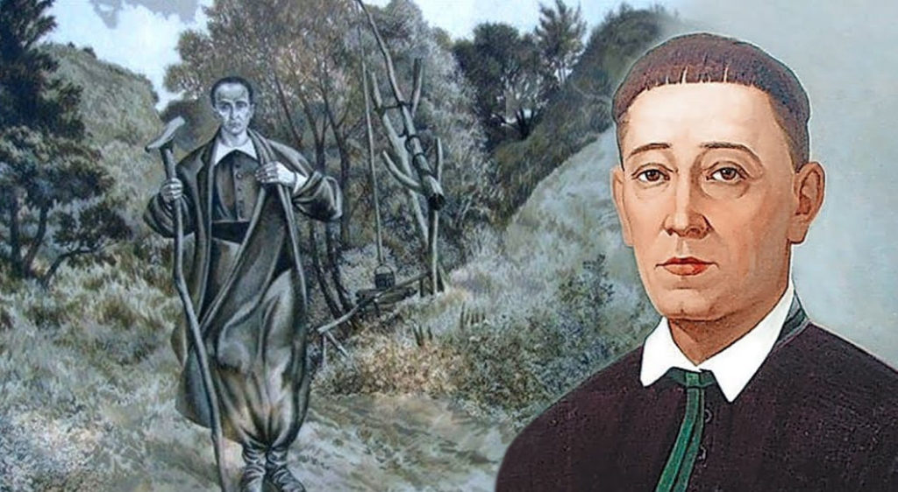
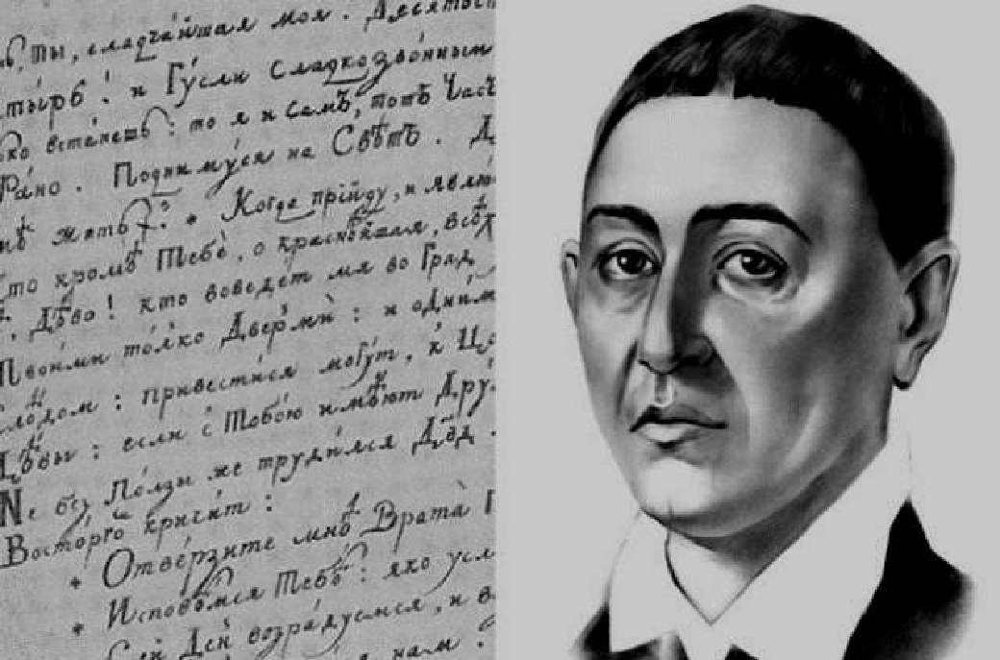
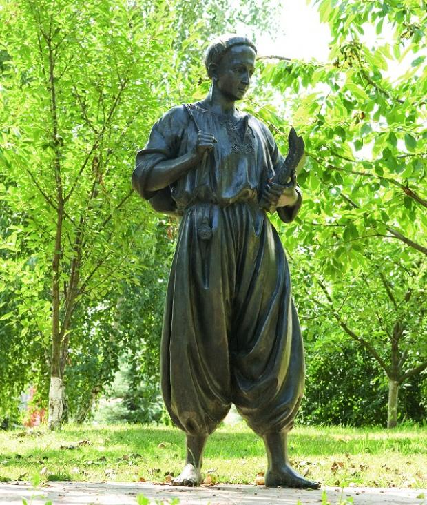

  
Сковорода Григорій Савич (1722-1794) просвітитель-гуманіст, філософ, поет, перекладач
Григорій Савич Сковорода народився 3 грудня 1722 р. в селі Чорнухах на Полтавщині в сім'ї малоземельного козака.
У 1738 р. він вступив до Києво-Могилянської академії. З 1742 по 1744 pp. жив у Петербурзі, був співаком придворної капели, прославився чудовим басом, майстерною грою на скрипці, флейті, бандурі, цимбалах і сопілці та композиторським талантом, створював музику на власні вірші. Навчання продовжив в Київській академії.
У 1750 р. у складі російської місії Сковорода виїжджав за кордон і три роки мандрував Угорщиною, Словаччиною, Польщею, відвідав Братиславу, Відень, Будапешт; бував в університетах, слухав лекції знаменитих професорів, працював у бібліотеках, студіював філософські праці й, володіючи багатьма мовами, дискутував із ученими різних країн.
Повернувся в Україну у 1753р., викладав поетику в Переяславському колегіумі. Написав для слухачів курс поетики "Роздуми про поезію і порадник до майстерності оної".
Протягом 1754—1759 pp. жив у селі Коврай на Переяславщині, працюючи домашнім учителем у поміщика Степана Томари. Написав значну частину віршів збірки "Сад божественних пісень". Працював викладачем (спочатку поетики, а згодом етики) у Харківському колегіумі. Учителюючи в Харкові, латинськими і українськими віршами написав "Байку Езопову" (1760 р.), склав дві вступні лекції-проповіді до курсу етики.
У 1766р. філософ написав трактат "Вхідні двері до християнської доброчинності", наступного року філософські твори "Наркіс. Розмова про те: взнай себе" і "Симфонія, названа книга Асхань про пізнання самого себе".
Протягом 1769—1774 pp. Сковорода написав збірку прозових байок "Байки харківські", "Бесіду, названу двоє, про те, що блаженним бути легко", і "Діалог, чи Розмова про стародавній світ", а також твори: "Розмова п'яти подорожніх про справжнє щастя в житті" ("Розмова дружня про душевний світ"), "Кільце", "Розмова, звана алфавіт, чи буквар світу".
Протягом 1769—1774 pp. Сковорода написав збірку прозових байок "Байки харківські", "Бесіду, названу двоє, про те, що блаженним бути легко", і "Діалог, чи Розмова про стародавній світ", а також твори: "Розмова п'яти подорожніх про справжнє щастя в житті" ("Розмова дружня про душевний світ"), "Кільце", "Розмова, звана алфавіт, чи буквар світу".
Поет і мандрівний філософ помер 9 листопада 1794 р. у селі Іванівці на Харківщині (нині Сковородинівка Золочівського району). Цікавою є епітафія (надгробний напис на могильній плиті): "Світ ловив мене, та не впіймав".
Щоб зрозуміти суть епітафії, слід детально познайомитися з життєвим шляхом поета, його філософськими поглядами. Постать Сковороди завжди була овіяна таємницями, домислами, вигадками й викликала інтерес. Та це й не дивно, бо Григорій Сковорода ще за життя став легендою. З цього приводу Микола Костомаров писав: "Мало можна вказати таких народних постатей, якою був Сковорода і який би так пам'ятав і поважав народ. На всьому обширі від Острбгозька до Києва, у багатьох будинках висять його портрети. Його мандрівне життя є предметом оповідань і легенд...".